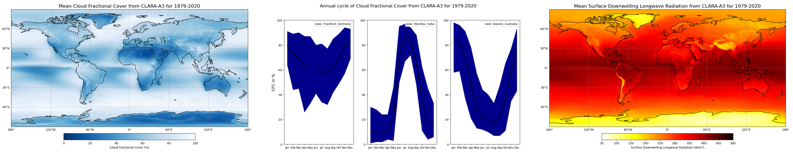

Calculation of global climatology and annual cycles of Cloud Fractional Cover from EUMETSAT’s CM SAF CLARA-A3 dataset#
This notebook provides you with an introduction to EUMETSAT’s CM SAF CLARA-A3 dataset available at the Climate Data Store(CDS). The dataset contains data for Essential Climate Variables (ECVs) Cloud Properties as well as Surface - and Earth Radiaiton Budget, while this notebook focuses on Cloud Fractional Cover as part of the ECV Cloud Properties available here: Cloud properties global gridded monthly and daily data from 1982 to present derived from satellite observations.
In addition, the tutorial is about the Surface downwelling longwave/shortwave flux (as part of the ECV Surface Radiation Budget) to demonstrate the relation between clouds and radiation. The data is also available at the CDS: Surface radiation budget from 1982 to present derived from satellite observations
The tutorial covers the full process from scratch and starts with a short introdution to the dataset and how to access the data from the Climate Data Store of the Copernicus Climate Change Service (C3S). This is followed by a step-by-step guide on how to process and visualize the data. Once you feel comfortable with the python code, you are invited to adjust or extend the code according to your interests! After a short introduction how to use a Jupyter notebook the analysis starts!

How to access the notebook#
This tutorial is in the form of a Jupyter notebook. You will not need to install any software for the training as there are a number of free cloud-based services to create, edit, run and export Jupyter notebooks such as this. Here are some suggestions (simply click on one of the links below to run the notebook):
| Run the tutorial via free cloud platforms: |
 |
|
|
|---|
If you would like to run this notebook in your own environment, we suggest you install Anaconda, which contains most of the libraries you will need. You will also need to install Xarray for working with multidimensional data in netcdf files, and the CDS API (pip install cdsapi) for downloading data programatically from the CDS.
The tutorial comprises the following steps:#
These include a brief introduction into the variables followed by a step-by-step guidance how to retrieve the data. With this done the focus is on analysing and visualising the data in various ways.
Introduction
Retrieve data
Mean global cloud distribution
Seasonal variations of clouds
Radiative effects of clouds
1. Introduction#
This tutorial is about cloud and radiation parameters of EUMETSAT’s CM SAF CLARA-A3 dataset. It covers step by step the process from retrieving the data to the processing and finally the visualisation of the results.
The CLARA-A3 dataset provides information of various Cloud Properties parameters as well as Surface Radiation Budget (SRB) and Earth Radiation Budget (ERB) parameters. Each ECV is covered by an own Jupyter Notebook (please also take a look at CLARA-A3 SRB and CLARA-A3 ERB).
This notebook focuses on the Cloud Fractional Cover (CFC) as well as Surface Downwelling Longwave and Surface Incoming Shortwave Radiation (SDL and SIS, respectively) as an extra feature to demonstrate the connection between clouds and radiation. A first Use Case provides a general idea how clouds are distributed all over the globe (averaged for the time period of 1979-2022). A second Use Case provides a closer look on three selected locations and their corresponding annual cycles in terms of cloud coverage. Those locations are defined by their geographical coordinates. Feel free to change the code and investigate the cloud coverage at more locations of your interest! To sum it up and link to the connection between clouds and radiation two radiation parameters are focused and climatologies of Surface Downwelling Longwave and Surface Incoming Shortwave Radiation provided.
The CLARA-A3 dataset is the successor of CLARA-A2.1 and comprises almost 44 years (Latest status: 09/2023) of continuous observations of clouds from space, thereby monitoring their spatial and temporal variability on Earth. CLARA-A3 comes not just with a temporal extension, but also with significant algorithm, calibration and product improvements.
As measurements cover the entire globe and time-coverage has reached climatological timescales by now, the dataset is first and foremost well suited to analyse long-term characteristics and climatological trends of clouds.
Questions about the cloud distribution and trends are crucial as clouds play a decisive role in the Earth’s climate system: They produce precipitation and strongly interact with radiation, thereby define the Earth’s temperature. Therefore, the CLARA-A3 climatology might be useful to e.g. determine the radiative effects of clouds on climate and to study to what extent changes in the Earth’s radiation budget can be attributed to changes in clouds. Furthermore it can be used as reference to assess e.g. the prediction of clouds by climate and forecast models.
As clouds strongly shield sunlight from the Earth’s surface, the above mentioned points might also concern, among others, the solar energy industry as well as tourism. Some regions are more suited for allocating photovoltaic power plants or spending holidays with nice weather conditions.
In the following, some simple illustrations are presented to prompt ideas on the usage, visualisation and analysis of the CLARA-A3 dataset. It comprises several variables to capture various cloud and radiation characteristics.
Please find further information about the datasets as well as the data in the Climate Data Store sections “Overview”, “Download data” and “Documentation”:
Cloud Properties: https://cds.climate.copernicus.eu/cdsapp#!/dataset/satellite-cloud-properties?tab=overview
Surface Radiation Budget: https://cds.climate.copernicus.eu/cdsapp#!/dataset/satellite-surface-radiation-budget?tab=overview
A tutorial video describes the ECV Cloud Properties and its impact on the atmospheric conditions. In addition, it provides you with a small introduction of the satellite instruments and retrieval methods followed by general information about the dataset and support options provided by the CDS.
2. Retrieve data#
Before the start we need to prepare an environment in which we will work. Since we will retrieve the data via the Application Programming Interface (API) of the CDS we need to install the CDS API. This is followed by the import of some required python libraries which will help us to handle the data.
2.1 Install CDS API#
We are using cdsapi to download the data. This package is not yet included by default on most cloud platforms. You can use pip to install it:
!pip install cdsapi
/usr/bin/sh: pip: Kommando nicht gefunden.
2.2 Import libraries#
Processing (climate) data with python requires some libraries. Libraries contain different functions for e.g. reading, processing and visualisation of large amounts of data and make it easier to work with it.
The basic data format for climate data is NetCDF. This is also the case for CLARA-A3 and to handle this well we use a library to work with multidimensional arrays, named Xarray. For the calculations we use Numpy, which provides various mathmatical operations. We also need libraries for plotting and viewing the data, in this case we will use Matplotlib and Cartopy.
Before we start analysing the data we need to take advantage of one of the two options to get the data:
Fill in the download form on the CDS page and simply download the data to the download folder of your computer - not preferred
Use the API (Application Programming Interface) for programmatic access to the CDS data - preferred, check Chapter 2.3 Enter CDS API key
For this we import the cdsapi-library and a library to unzip the downloaded zip files.
# Download data from CDS via cdsapi and unzip the files via zipfile
import cdsapi
import zipfile
# Libraries for data reading and processing
import xarray as xr
import numpy as np
# Libraries for visualisation in form of maps or graphs
from matplotlib import pyplot as plt
import cartopy.crs as ccrs
2.3 Enter CDS API key#
The data can be found in the Climate Data Store: https://cds.climate.copernicus.eu/cdsapp#!/home. In case you don’t have an account yet, please click on “Login/register” at the top right and select “Create new account” (Figure 1a). With the process finished you are able to login to the CDS and can search for your preferred data.
We will request data from the Climate Data Store programmatically with the help of the CDS API. Let us make use of the option to manually set the CDS API credentials. First, you have to define two variables: URL and KEY which build together your CDS API key. The string of characters that make up your KEY include your personal User ID and CDS API key. To obtain these, first register or login to the CDS (http://cds.climate.copernicus.eu), then visit https://cds.climate.copernicus.eu/api-how-to and copy the string of characters listed after “key:” in the black block on the right (Figure 1b). Please replace the ######### below with this string.
URL = 'https://cds.climate.copernicus.eu/api/v2'
KEY = '##################################'

Figure 1: This helps to create an account (Figure 1a, left) and use the CDS API (Figure 1b, right). The arrow on the top right of Figure 1a indicates where to start the register process with the arrow on the left side points to the button to create a new account. With that process finished the link in the text section above leads to Figure 1b. Please copy the text of the second line of the black block (see arrow) in the line “KEY” above.
The current directory is defined as datadir. This is the central directory where we will create subfolders to save the data and output files.
In advance of the download please create a folder named “Download” in the datadir directory. We will set this as the location where to store the downloaded zip-files.
datadir = './'
2.4 Get the data#
For this tutorial we need data for Cloud Properties first, so please either click on “Datasets” in the CDS and search for “Cloud Properties” or simply click on: https://cds.climate.copernicus.eu/cdsapp#!/dataset/satellite-cloud-properties?tab=overview. The name of the Cloud Properties landing page is: Cloud properties global gridded monthly and daily data from 1982 to present derived from satellite observations.
Once you reached the landing page, feel free to have a look at the documentation and information provided.
The data can be found in the “Download data”-tab with a form to select certain variables, years etc. For our use case we select as follows:
Product family: CLARA (CLoud, Albedo and Radiation)
Origin: EUMETSAT (European Organisation for the Exploitation of Meteorological Satellites)
Variable: Cloud fraction
Climate data record type: Thematic Climate Data Record (TCDR)
Sensor on satellite: AVHRR on multiple satellites
Time aggregation: Monthly mean
Year: Every year from 1982-2018 (shortcut with “Select all” at the bottom right)
Month: Every month from January to December (shortcut with “Select all” at the bottom right)
Format: Compressed zip file (.zip)
Geographical area: Whole available region
Please make sure all Terms of use are accepted (see at the top of Figure 2). This can be done at the bottom of the Download data tab.
At the bottom left of the page, click on Show API request and copy & paste the text into the Jupyter notebook (see highlighted text in Figure 2). The first line can be skipped since it is already part of the Import libraries section.

Figure 2 shows the CDS API at the bottom of the Download data section. Please focus at the Terms of use, the Show/Hide API request-Button and the highlighted text.
Note: To make sure the zip-file will be saved in the correct place and with an appropriate name you can adjust the last line like below. In our case a folder “Download” was created manually in the defined directory to achieve a clear structure and the download file is called download_cld_tcdr.zip.
c = cdsapi.Client()
c.retrieve(
'satellite-cloud-properties',
{
'format': 'zip',
'product_family': 'clara',
'origin': 'eumetsat',
'variable': 'cloud_fraction',
'climate_data_record_type': 'thematic_climate_data_record',
'sensor_on_satellite': 'avhrr_on_multiple_satellites',
'time_aggregation': 'monthly_mean',
'year': [
'1982', '1983', '1984',
'1985', '1986', '1987',
'1988', '1989', '1990',
'1991', '1992', '1993',
'1994', '1995', '1996',
'1997', '1998', '1999',
'2000', '2001', '2002',
'2003', '2004', '2005',
'2006', '2007', '2008',
'2009', '2010', '2011',
'2012', '2013', '2014',
'2015', '2016', '2017',
'2018',
],
'month': [
'01', '02', '03',
'04', '05', '06',
'07', '08', '09',
'10', '11', '12',
],
},
f'{datadir}Download/download_cld.zip')
2023-09-22 12:03:38,903 INFO Welcome to the CDS
2023-09-22 12:03:38,904 INFO Sending request to https://cds.climate.copernicus.eu/api/v2/resources/satellite-cloud-properties
2023-09-22 12:03:39,351 INFO Request is completed
2023-09-22 12:03:39,352 INFO Downloading https://download-0021.copernicus-climate.eu/cache-compute-0021/cache/data7/dataset-satellite-cloud-properties-469e1eef-79a5-4e35-8f14-ea273779ca18.zip to ./Download/download_cld.zip (1.5G)
2023-09-22 12:04:24,709 INFO Download rate 33.2M/s
Result(content_length=1576955238,content_type=application/zip,location=https://download-0021.copernicus-climate.eu/cache-compute-0021/cache/data7/dataset-satellite-cloud-properties-469e1eef-79a5-4e35-8f14-ea273779ca18.zip)
The zip-file should be downloaded and saved at the correct place. To unzip it to a certain folder please create a folder named Data in the same directory like Download. Within the Data-folder please create a folder named CLD where we plan do unzip the files to.
The following lines unzip the data. datadir + ‘Downloda/download_cld.zip is the path to the zip-file. The first line constructs a ZipFile() object, the second line applies the function extractall to extract the content.
datadir + ‘Data/CLD/’ is the path we want to store the files.
with zipfile.ZipFile(datadir + 'Download/download_cld.zip', 'r') as zip_ref:
zip_ref.extractall(datadir + 'Data/CLD/')
With the zip-file unziped and files at the right place we can start reading and processing the data.
The following line starting with “file” considers only files in the given directory starting the “CFCmm” and ending with “.nc” and creates a list with all matching files. The * means “everything” and takes every file into account. This is quite useful since year and month are part of the file names.
The second line reads the defined file list with the xarray function “open_mfdataset” (mf - multiple file) and concatenates them according to the time dimension.
file = datadir + 'Data/CLD/CFCmm*.nc'
dataset_cfc = xr.open_mfdataset(file, concat_dim='time')
Please find below the xarray dataset of the Cloud Properties exemplary:
It provides information about the:
Dimensions: Lat and Lon with 0.25°x0.25° resolution and a lenght of 720/1440 and 524 months (almost 44 years * 12 months)
Note: No data available for 02/1985 due to missing satellite data
Coordinates: Spatial coordinates for Latitude and Longitude, temporal coordinates for time
Data variables: List of different variables (in our case “cfc” is relevant)
Attributes: Various important information about the dataset
dataset_cfc
<xarray.Dataset>
Dimensions: (bndsize: 2, lat: 720, lon: 1440, time: 443)
Coordinates:
* lat (lat) float32 -89.875 -89.625 -89.375 ... 89.375 89.625 89.875
* lon (lon) float32 -179.875 -179.625 -179.375 ... 179.625 179.875
* time (time) datetime64[ns] 1982-01-01 1982-02-01 ... 2018-12-01
Dimensions without coordinates: bndsize
Data variables:
time_bnds (time, bndsize) datetime64[ns] dask.array<shape=(443, 2), chunksize=(1, 2)>
nobs (time, lat, lon) float64 dask.array<shape=(443, 720, 1440), chunksize=(1, 720, 1440)>
nobs_day (time, lat, lon) float64 dask.array<shape=(443, 720, 1440), chunksize=(1, 720, 1440)>
nobs_night (time, lat, lon) float64 dask.array<shape=(443, 720, 1440), chunksize=(1, 720, 1440)>
cfc (time, lat, lon) float64 dask.array<shape=(443, 720, 1440), chunksize=(1, 720, 1440)>
cfc_std (time, lat, lon) float64 dask.array<shape=(443, 720, 1440), chunksize=(1, 720, 1440)>
cfc_low (time, lat, lon) float64 dask.array<shape=(443, 720, 1440), chunksize=(1, 720, 1440)>
cfc_middle (time, lat, lon) float64 dask.array<shape=(443, 720, 1440), chunksize=(1, 720, 1440)>
cfc_high (time, lat, lon) float64 dask.array<shape=(443, 720, 1440), chunksize=(1, 720, 1440)>
cfc_day (time, lat, lon) float64 dask.array<shape=(443, 720, 1440), chunksize=(1, 720, 1440)>
cfc_night (time, lat, lon) float64 dask.array<shape=(443, 720, 1440), chunksize=(1, 720, 1440)>
Attributes:
title: CM SAF cLoud, Albedo and RAdiation dataset, ...
summary: This file contains AVHRR-based Thematic Clim...
product_version: 2.0
creator_name: DE/DWD
creator_email: contact.cmsaf@dwd.de
creator_url: www.cmsaf.eu
institution: EUMETSAT/CMSAF
project: Satellite Application Facility on Climate Mo...
references: http://dx.doi.org/10.5676/EUM_SAF_CM/CLARA_A...
keywords_vocabulary: GCMD Science Keywords, Version 8.1
keywords: EARTH SCIENCE > ATMOSPHERE > CLOUDS > CLOUD ...
Conventions: CF-1.6,ACDD-1.3
standard_name_vocabulary: Standard Name Table (v28, 07 January 2015)
date_created: 2016-01-09T21:14:34Z
geospatial_lat_units: degrees_north
geospatial_lat_min: -90.0
geospatial_lat_max: 90.0
geospatial_lon_units: degrees_east
geospatial_lon_min: -180.0
geospatial_lon_max: 180.0
geospatial_lat_resolution: 0.25 degree
geospatial_lon_resolution: 0.25 degree
time_coverage_start: 1982-01-01T00:00:00Z
time_coverage_end: 1982-01-31T23:59:59Z
time_coverage_duration: P1M
time_coverage_resolution: P1M
platform_vocabulary: GCMD Platforms, Version 8.1
platform: NOAA POES > NOAA Polar Orbiting Environmenta...
instrument_vocabulary: GCMD Instruments, Version 8.1
CMSAF_included_Daily_Means: 31.0
CMSAF_L1_processor: PyGAC
CMSAF_L2_processor: PPS2014 incl. patch 1 and CPP
CMSAF_L3_processor: CMSAFGACL3_V2.0
date_modified:
date_metadata_modified:
history:
instrument: AVHRR > Advanced Very High Resolution Radiom...
id: DOI:10.5676/EUM_SAF_CM/CLARA_AVHRR/V002
In advance of the following processing and visualisation part we set a directory where to save the figures. Please create a folder “Figures” in the “datadir” directory.
Here we define the path were to save the plots as figpath:
figpath = datadir + 'Figures/'
3. Mean global cloud distribution#
Use Case #1 aims to give a general overview about the global distribution of clouds.
3.1 Calculation of the temporal average of cloud fractional cover#
We therefore calculate the temporal average with the function np.nanmean. np is short for numpy and a library for mathmatical working with arrays. nanmean averages the data and ignores nan’s. This operation is applied to dataset_cfc and the variable “cfc”. axis=0 averages over the first axis, which is “time” in this case. This leads to a two-dimensional result with an average over time.
# Calculate temporal average
average = np.nanmean(dataset_cfc['cfc'], axis=0)
# Get longitude and latitude coordinates. Both are variables of the dataset and available with
# the ".variables['lat/lon']" function; [:] usually means ["from":"till"] but
# without numbers it means "everything"
lon = dataset_cfc.variables['lon'][:]
lat = dataset_cfc.variables['lat'][:]
3.2 Plot of the temporal average of cloud fractional cover#
With the caluculation done the data is ready for a plot. Please find the plot and settings in the next sectio.
Some further notes:
Matplotlib provides a wide range of colorbars: https://matplotlib.org/stable/users/explain/colors/colormaps.html; the addition _r reverses the colorbar
The “add_subplot” part provides the option to plot more than one figure (e.g. a 2x2 matrix with four plots together). In this case (1,1,1) means that the panel is a 1x1 matrix and the following plot is the first subplot.
# Create figure and size
fig = plt.figure(figsize=(15, 8))
# Create the figure panel and define the Cartopy map projection (PlateCarree)
ax = fig.add_subplot(1, 1, 1, projection=ccrs.PlateCarree())
# Plot the data and set colorbar, minimum and maximum values
im = plt.pcolormesh(lon, lat, average, cmap='Blues_r', vmin=0, vmax=100)
# Set title and size
ax.set_title('Mean Cloud Fractional Cover from CLARA-A3 for 1979-2022', fontsize=16)
# Define gridlines with linewidth, color, opacity and style
gl = ax.gridlines(linewidth=1, color='gray', alpha=0.5, linestyle='--')
# Set x- and y-axis labels to True or False
gl.xlabels_top = False
gl.xlabels_bottom = True
gl.ylabels_left = True
# Set coastlines
ax.coastlines()
# Set colorbar and adjust size, location and text
cbar = plt.colorbar(im, fraction=0.05, pad=0.05, orientation='horizontal')
cbar.set_label('Cloud Fractional Cover (%)')
# Save figure in defined path and name
plt.savefig(figpath + 'Cloud_mean.png')
# Show plot and close it afterwards to reduce the amount of storage
plt.show()
plt.close()

Figure 3 shows the time-averaged global distribution of clouds on Earth. It has been calculated as a time average over the monthly mean cloud fractional cover data from 1979-2022 based on the CLARA-A3 dataset. As shown here, especially cloudy regions can be found along the storm tracks of the midlatitudes, which are known for the frequent occurence of cyclones. They typically result in vertical motion of air, a prerequisite for the formation of clouds. High concentrations of clouds also appear in the tropics near the equator, where strong insolation triggers intense convection, thus cloud formation (compare with Inter-Tropical Convergence Zone, ITCZ). The smallest amount are mainly present in the subtropics in Australia, North Africa, Southern Africa, and Soutwest South America, where large-scale downwelling motion generally prevails.
4. Seasonal variations of clouds#
Use Case #2 shows three annual cycles of cloud fractional cover for different locations. As insolation and flow patterns vary significantly over the year in many parts of the Earth, the mean presence of clouds also exhibits seasonal differences. As one example that neatly demonstrates steady variations throughout the year, Use Case #2 shows the mean monthly evolution of the fractional cloud cover for Frankfurt (Germany), Mumbai (India) and Darwin (Australia).
4.1 Calculation and Plot of cloud coverage annual cycles on three different spots#
We define three locations of interest in terms of latitude and longitude coordinates. Feel free to discover different locations and change the coordinates according to your interests! The basic setup consists of Frankfurt (Germany) with a warm and temperate climate of central Europe, Mumbai (India) with its influence of the monsoon and Darwin (Australia) in the tropical savanna climate.
# Frankfurt, Germany
point_lat_1 = 50.11
point_lon_1 = 8.68
# Mumbai, India
point_lat_2 = 19.08
point_lon_2 = 72.88
# Darwin, Australia
point_lat_3 = -12.46
point_lon_3 = 130.84
The following operations are applied on all three points, so we try to make advantage of a loop. A loop runs a defined set of commands a defined number of times. Before we run the loop we define vectors containing the information for all three points.
# Latitude/Longitude points and labels with index 0 for Frankfurt, 1 for Mumbai and 2 for Darwin
point_lat = [point_lat_1, point_lat_2, point_lat_3]
point_lon = [point_lon_1, point_lon_2, point_lon_3]
label = ['Frankfurt, Germany', 'Mumbai, India', 'Darwin, Australia']
# X-axis values to plot against
year = ['Jan', 'Feb', 'Mar', 'Apr', 'May', 'Jun', 'Jul', 'Aug', 'Sep', 'Oct', 'Nov', 'Dec']
Now the actual calculation and visualisation takes place. The for-loop defines that the steps will be runned three times (range(0,3) with indices 0, 1 and 2). The first run with index “0” takes the first element of a vector with the addition [i], e.g. point_lat[i] and therefore point_lat_1 (see above).
fig, ax = plt.subplots(nrows=1, ncols=3, figsize=(15, 8))
fig.suptitle('Annual cycle of Cloud Fractional Cover from CLARA-A3 for 1979-2022', fontsize=16)
for i in range(0, 3):
# Search for the nearest grid point with respect to the entered data
# Get latitudes of the dataset as array
latitude_point = np.asarray(dataset_cfc['lat'].values)
# Calculate differences between every latitude and defined latitude for the location (np.abs)
# Search for the smallest difference (.argmin()) and save the index
idx_lat = (np.abs(latitude_point - point_lat[i])).argmin()
# Repeat steps for longitude
longitude_point = np.asarray(dataset_cfc['lon'].values)
idx_lon = (np.abs(longitude_point - point_lon[i])).argmin()
# The data description table in the CDS mentioned a gap for February 1985, so in case of
# calculation of a annual cycle there should be a "nan" inserted at the certain point
# Take global dataset and cut for selected location but keep every time step
# [:,idx_lat,idx_lon]
point = dataset_cfc['cfc'][:, idx_lat, idx_lon]
# Convert from xarray to array
point = point.values
# Take created array "point" and insert nan (np.nan) at index 37 - which is 02/1985 with
# a start date of 01/1982)
point = np.insert(point, 37, np.nan)
# Calculate annual cycle
# Define vectors with 12 elements
cycle = np.arange(0.0, 12.0, 1)
cycle_max = np.arange(0.0, 12.0, 1)
cycle_min = np.arange(0.0, 12.0, 1)
# Calculate annual cycle, loop runs 12 times starting with 0 (January) and takes the average
# of every 12th element to get the average for January. Index 1 averages all Februaries etc.
# In addition the minimum and maximum of all 37 e.g. Januaries will be calculated
for j in range(0, 12):
cycle[j] = np.nanmean(point[j::12])
cycle_max[j] = np.nanmax(point[j::12])
cycle_min[j] = np.nanmin(point[j::12])
# Set title and size
ax[i].set_title('Annual cycle of Cloud Fractional Cover from CLARA-A3 for 1979-2022',
fontsize=16)
# Plot data and adjust color, linewidth and label
ax[i].plot(year, cycle, color='black', label=label[i], linewidth=2)
# Fill space between min and max values
ax[i].fill_between(year, cycle_min, cycle_max, color='darkblue')
# Set legend, axis-labels and ticks, the y-axis label is just defined for the left/first plot
ax[i].legend()
ax[0].set_ylabel('CFC in %', fontsize=14)
ax[i].set_ylim(0, 100)
# Save figure in defined path and name
plt.savefig(figpath + 'Cycle_' + str(label[i]) + '.png')
# Show plot
plt.show()

Figure 4 shows the mean monthly annual cycle of the fractional cloud cover near to Mumbai, a city situated in the Southwest of India. Mumbai exhibits a very strong seasonal cycle in cloud coverage with averages reaching up to 90% in summer and less than 20% in winter. This is due to the Asian monsoon, advecting dry continental air in winter and moist oceanic air in summer to India. As counterpart to the Asian monsoon, a further figure shows the north Australian monsoon, showing fractional cloud cover data next to Darwin, Australia.
Annual cycles are not only observed in the subtropical monsoon regions, but also e.g. in midlatitudes, although much less pronounced. A further figure depicts the monthly mean cloudiness near to Frankfurt, Germany. The amplitude is considerably smaller, but a slightly larger amount of cloud cover is evident in winter. This can be ascribed to increased cyclonic activity in winter due to particulary large differences in temperatures between the equator and the poles.
The blue shaddow is defined by the minimum and maximum month out of all 44 years (e.g. the lower end of January for Frankfurt is the January from 1979 - 2022 with the least cloud coverage).
Use case 3: Radiative effects of clouds#
To demonstrate the basic relation between clouds and radiation, which is why clouds are ascribed a crucial role in the Earth’s climate system, Figure 5 presents time-averaged data from the CLARA-A3 dataset on radiation. This dataset was simultaneously compiled with the CLARA-A3 dataset on clouds by EUMETSAT’s CM SAF.
The calculation of the temporal-averaged radiation is similar to Use Case 1 but with different variables.
Please click on “Datasets” in the bar at the top and either search for “Surface Radiation Budget” or click on https://cds.climate.copernicus.eu/cdsapp#!/dataset/satellite-surface-radiation-budget?tab=overview. The name of the landing page is Surface radiation budget from 1982 to present derived from satellite observations.
Please select in the “Download data” tab the following:
Product family: CLARA (CLoud, Albedo and Radiation)
Origin: EUMETSAT (European Organisation for the Exploitation of Meteorological Satellites)
Variable: Surface downwelling shortwave flux and Surface downwelling longwave flux
Climate data record type: Thematic Climate Data Record (TCDR)
Sensor on satellite: AVHRR on multiple satellites
Time aggregation: Monthly mean
Year: Every year from 1979-2022
Month: Every month from January to December
Version: v2.0
Format: Zip file (.zip)
Please click on Show API request. Copy & paste the code to your Jupyter Notebook and adjust the last line accordingly. Watch out to accept the Terms of use.
c = cdsapi.Client()
c.retrieve(
'satellite-surface-radiation-budget',
{
'format': 'zip',
'product_family': 'clara',
'origin': 'eumetsat',
'variable': [
'surface_downwelling_longwave_flux', 'surface_downwelling_shortwave_flux',
],
'climate_data_record_type': 'thematic_climate_data_record',
'sensor_on_satellite': 'avhrr_on_multiple_satellites',
'time_aggregation': 'monthly_mean',
'year': [
'1982', '1983', '1984',
'1985', '1986', '1987',
'1988', '1989', '1990',
'1991', '1992', '1993',
'1994', '1995', '1996',
'1997', '1998', '1999',
'2000', '2001', '2002',
'2003', '2004', '2005',
'2006', '2007', '2008',
'2009', '2010', '2011',
'2012', '2013', '2014',
'2015', '2016', '2017',
'2018',
],
'month': [
'01', '02', '03',
'04', '05', '06',
'07', '08', '09',
'10', '11', '12',
],
'version': 'v2_0',
},
f'{datadir}Download/download_srb.zip')
2023-09-22 12:05:57,579 INFO Welcome to the CDS
2023-09-22 12:05:57,581 INFO Sending request to https://cds.climate.copernicus.eu/api/v2/resources/satellite-surface-radiation-budget
2023-09-22 12:05:57,802 INFO Request is completed
2023-09-22 12:05:57,804 INFO Downloading https://download-0019.copernicus-climate.eu/cache-compute-0019/cache/data0/dataset-satellite-surface-radiation-budget-ad165317-cd73-4d13-a8ae-fda9de1173cb.zip to ./Download/download_srb.zip (6.2G)
2023-09-22 12:12:30,050 INFO Download rate 16.3M/s
Result(content_length=6708606670,content_type=application/zip,location=https://download-0019.copernicus-climate.eu/cache-compute-0019/cache/data0/dataset-satellite-surface-radiation-budget-ad165317-cd73-4d13-a8ae-fda9de1173cb.zip)
The next steps are a repeat of the way the cloud fractional cover data was processed before:
Unzip the files
Create list with files
Read file list via “xr.open_mfdataset”
Temporal average of data
with zipfile.ZipFile(datadir + 'Download/download_srb.zip', 'r') as zip_ref:
zip_ref.extractall(datadir + 'Data/SRB/')
file = datadir + 'Data/SRB/SDLmm*.nc'
dataset_sdl = xr.open_mfdataset(file, concat_dim='time')
file = datadir + 'Data/SRB/SISmm*.nc'
dataset_sis = xr.open_mfdataset(file, concat_dim='time')
# Calculate temporal average of dataset_sdl/sis and corresponding variables, np.nanmean averages and
# ignores nan's
average_sdl = np.nanmean(dataset_sdl['SDL'], axis=0)
average_sis = np.nanmean(dataset_sis['SIS'], axis=0)
/cmsaf/nfshome/routcm/Modules_CentOS/python/3.7.2/lib/python3.7/site-packages/ipykernel_launcher.py:3: RuntimeWarning: Mean of empty slice
This is separate from the ipykernel package so we can avoid doing imports until
Similar to Use Case 2 more than one figure will be created. This gives us the chance to use a loop with two runs. A set of vectors with two entries is created below, using the first entry for SDL and the second entry for SIS.
data = [average_sdl, average_sis]
title = ['Mean Surface Downwelling Longwave Radiation from CLARA-A3 for 1979-2020',
'Mean Surface Downwelling Shortwave Radiation from CLARA-A3 for 1979-2022']
var = ['SDL', 'SIS']
cbar_text = ['Surface Downwelling Longwave Radiation (W/m²)',
'Surface Incoming Shortwave Radiation (W/m²)']
lowerlimit = [50, 0]
upperlimit = [500, 320]
Following the visualisation takes place with a similar setup compared to Use Case 1. The loop makes sure everything happens twice for Surface Downwelling Longwave Radiation and Surface Downwelling Shortwave Radiation.
for i in range(0, 2):
# Create figure and size
fig = plt.figure(figsize=(15, 8))
# Create the figure panel and define the Cartopy map projection (PlateCarree)
ax = fig.add_subplot(1, 1, 1, projection=ccrs.PlateCarree())
# Plot the data and set colorbar, minimum and maximum values
im = plt.pcolormesh(lon, lat, data[i], cmap='hot_r', vmin=lowerlimit[i], vmax=upperlimit[i])
# Set title and size
ax.set_title(title[i], fontsize=16)
# Define gridlabels and lines
gl = ax.gridlines(linewidth=1, color='gray', alpha=0.5, linestyle='--')
gl.xlabels_top = False
gl.xlabels_bottom = True
gl.ylabels_left = True
gl.xlines = True
gl.ylines = True
# Set coastlines
ax.coastlines()
# Set colorbar and adjust size, location and text
cbar = plt.colorbar(im, fraction=0.05, pad=0.05, orientation='horizontal')
cbar.set_label(cbar_text[i])
# Save figure in defined path and name
plt.savefig(figpath + 'Radiation_' + str(var[i]) + '.png')
# Show plot
plt.show()


Figure 5 shows the mean incoming long- and shortwave radiation at the Earth’s surface. It can nicely be linked to the mean fractional cloud cover in Figure 1, especially in regions where solar insolation is particulary high, mainly near the equator. As clouds reflect great parts of solar (shortwave) radiation, regions with low values of shortwave radiation at the surface correspond to regions with high fractional cloud cover in the mean. Clouds act as kind of mirrors, preventing solar radiation from reaching the Earth’s surface.
At the same time, clouds also prevent terrestrial (longwave) radiation, i.e. heat, from passing back into space. Thus, many spots of high cloud coverage correspond to high values of incomming longwave radiation, and vice versa. Clouds act like a blanket, trapping some of the energy the Earth emits. That is why starry nights usually become colder than cloudy ones.
Hence, clouds play a dual role for the Earth’s energy budget: They have both a cooling and a warming radiative impact. Their net effect strongly depends on the cloud’s physical properties and their height. Usually, high clouds tend to have a net warming effect on the earth, whereas mid- and low-level clouds rather cool it. Globally and annually, the shortwave effect of clouds overweights the longwave one, by abouth 20 W/m² at present (5th IPCC assessment report, chapter 7.2.1).
References#
5th IPCC assessment report, chapter 7:
Boucher, O., D. Randall, P. Artaxo, C. Bretherton, G. Feingold, P. Forster, V.-M. Kerminen, Y. Kondo, H. Liao, U. Lohmann, P. Rasch, S.K. Satheesh, S. Sherwood, B. Stevens and X.Y. Zhang, 2013: Clouds and Aerosols. In: Climate Change 2013: The Physical Science Basis. Contribution of Working Group I to the Fifth Assessment Report of the Intergovernmental Panel on Climate Change [Stocker, T.F., D. Qin, G.-K. Plattner, M. Tignor, S.K. Allen, J. Boschung, A. Nauels, Y. Xia, V. Bex and P.M. Midgley (eds.)]. Cambridge University Press, Cambridge, United Kingdom and New York, NY, USA